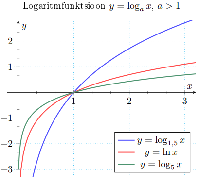
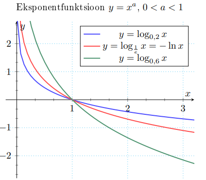

Logaritmfunktsioonid
Logaritmfunktsioon y = loga x, a > 0, a ̸= 1. Kõige populaarsem nendest on naturaallogaritm ln x = loge x
Logaritmfunktsioon
f(x) = loga x, kui a > 1
• X = (0, ∞), Y = R
• üksühene
• pöördfunktsioon: f -1(x) = ax

Eksponentfunktsioon
f(x) = loga x, kui 0 < a < 1
• X = (0, ∞), Y = R
• üksühene
• pöördfunktsioon: f -1(x) = ax

eelmine teema
järgmine teema